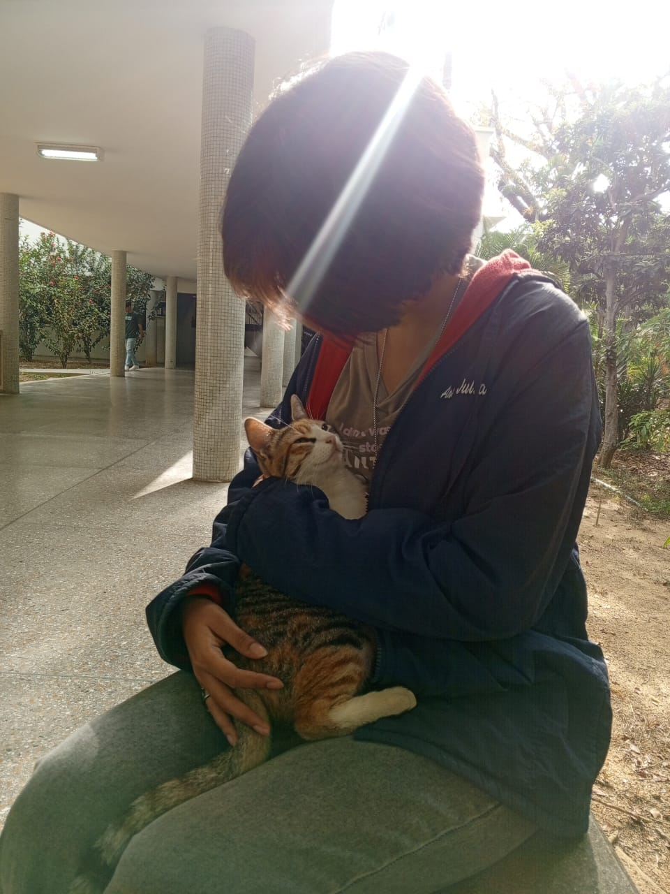

Holii soy estudiante de Computación en la Universidad Central de Venezuela (UCV). Me gusta mucho la rama de Bases de datos, principalmente orientado en la parte de inteligencia de negocios. Actualmente soy preparadora de la materia matematicas discretas 1 y ha sido toda una experiencia.
| Mi color favorito es: | Rojo |
| Mi libro favorito es: | Omniscient reader |
| Mi género musical favorito es: | pop alternativo |
| Mi videojuego favorito es: | angry birds |
| Lenguajes de programación aprendidos: | C++, Java, Python, SQL |
Si necesitan comunicarse conmigo me pueden escribir a: maria14miranda@gmail.com